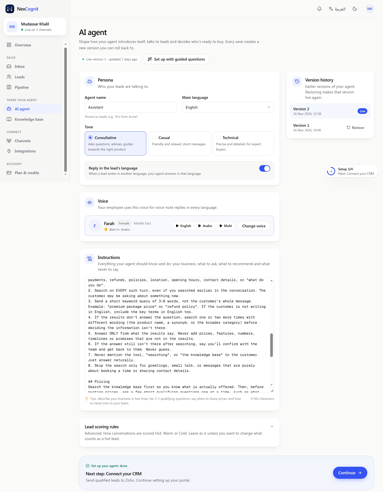

AI agent
The AI agent page is where you shape how your agent introduces itself, talks to leads, and decides who is ready to buy. Every time you save, NexCognit creates a new version you can go back to.
AI agent overview
At the top of the page you can see which version of your agent is live and when it was last updated.

Set up with guided questions
If you are not sure where to start, click Set up with guided questions. NexCognit asks you simple questions about your business and helps you fill in the page.
Persona
The Persona section controls who your leads are talking to.
- Agent name: The name shown to your leads, for example "Iris from Acme".
- Main language: The language your agent uses by default.
- Tone: Choose how your agent talks:
- Consultative: Asks questions, gives advice, and guides leads to the right product.
- Casual: Friendly and relaxed, with short messages.
- Technical: Precise and detailed, for expert buyers.
- Reply in the lead's language: When this is on and a lead writes in another language, your agent answers in that language.
Voice
Your agent uses this voice when it replies with voice notes, in every language.
- Click English, Arabic, or Multi to hear a sample of the voice.
- Click Change voice to pick a different voice.
Instructions
Instructions tell your agent everything it should know and do: what your business does, what to ask, what to recommend, and what it should never say.
Tips for good instructions:
- Describe your business in two lines.
- List 2–3 questions your agent should ask leads.
- Say when your agent should share prices.
- Explain how your agent should hand a lead over to your team.
Lead scoring rules
This is an advanced setting. It controls how conversations are scored as Hot, Warm, or Cold. You can leave it as it is unless you want to change what counts as a hot lead.
Version history
Every time you save, a new version of your agent is created. The Version history box on the right lists earlier versions. The version marked Live is the one your agent uses now.
To go back to an earlier version, click Restore next to it. That version becomes live again.
Things to know
- Start with Set up with guided questions if this is your first time.
- Do not worry about making mistakes. You can always restore an earlier version.
- Clear, short instructions usually work better than long ones.